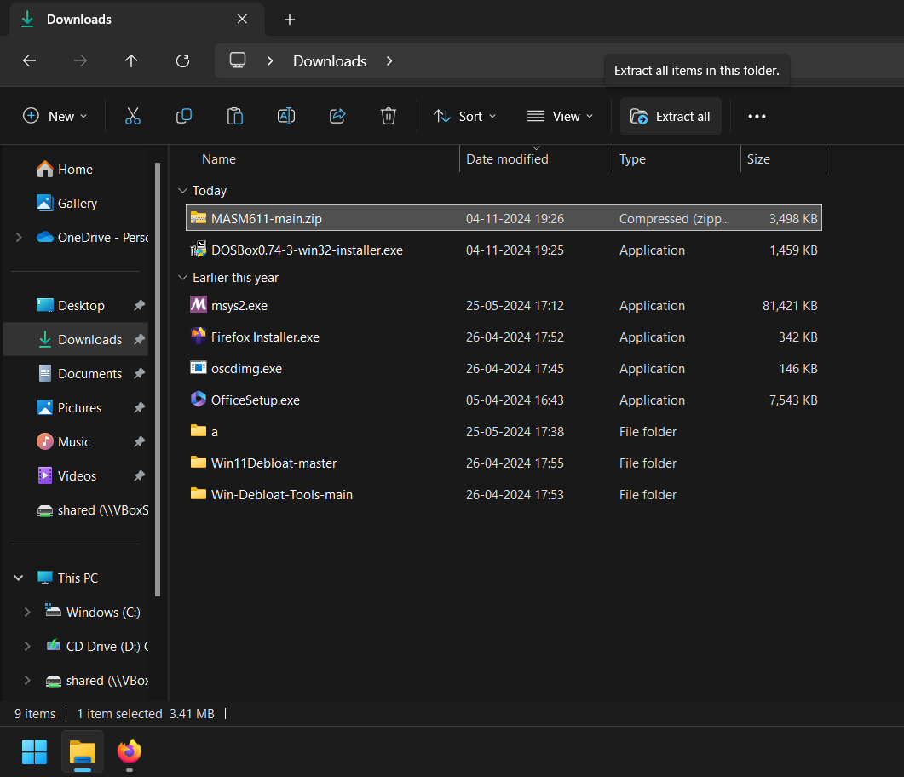
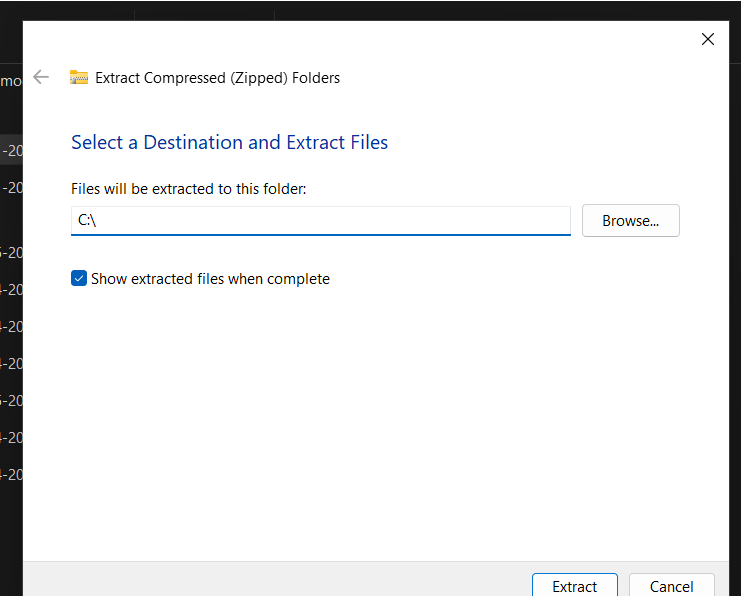
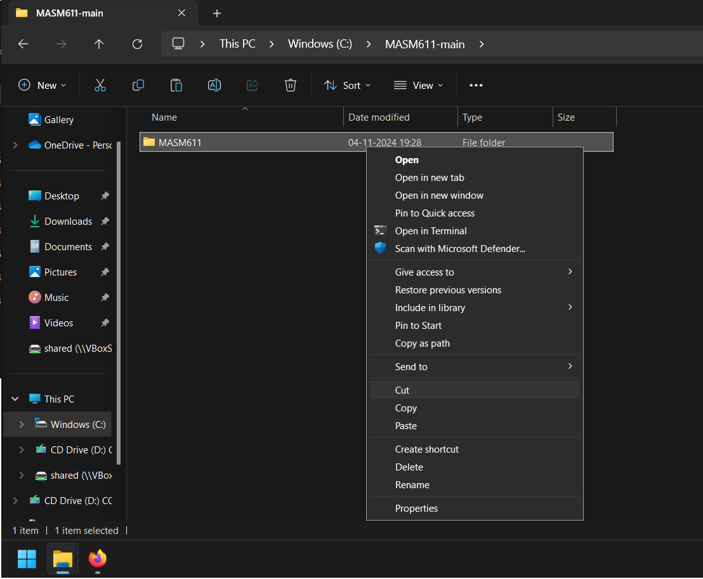
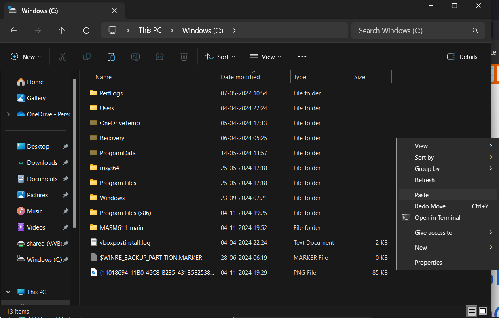
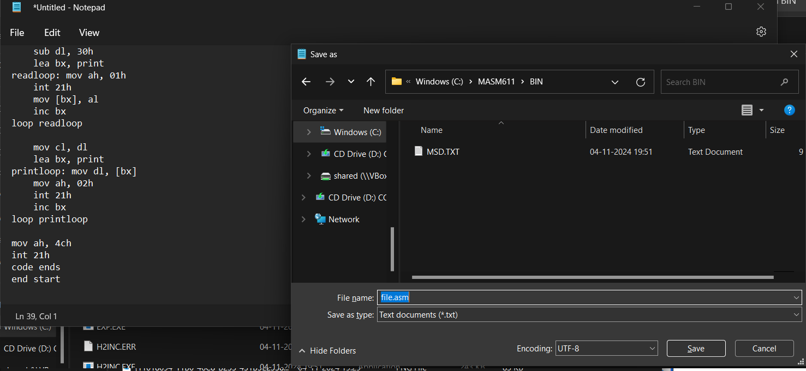
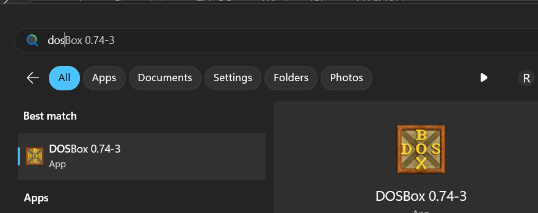
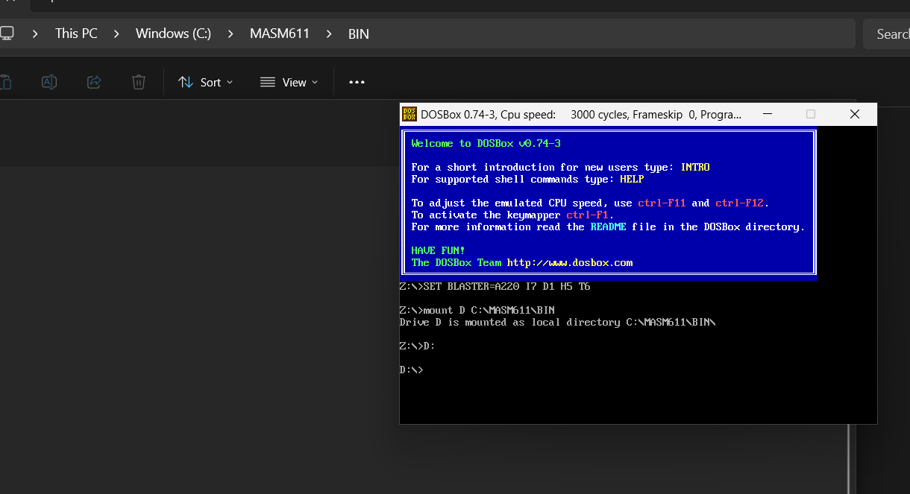
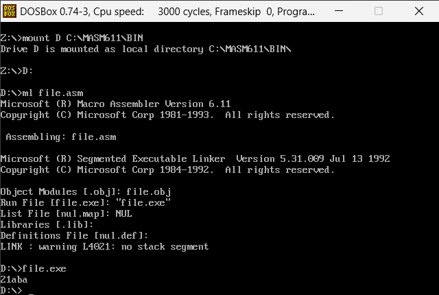

Setting Up MASM
last updated: Nov-4 2024 : 8:6pm
Setup MASM on Windows
This should work on both windows 11 & 10. Here, I'm downloading MASM compiler and extracting it to root of C:
drive. This compiler, used here is made for older x86 processors. Hence you can run MASM only inside DOSBox
Steps
- Install DOSBox: https://sourceforge.net/projects/dosbox/files/latest/download
- Install MASM: There are many variants available, you can use whatever you found. Here I'm using MASM611 obtained from a random GitHub page: https://codeload.github.com/POCU/MASM611/zip/refs/heads/main
- Goto Downloads, and extract downloaded MASM zip file to
C:
drive


- Goto the extracted folder (in this case
C:\MASM611-main
) and cut and paste MASM611
folder to C:
. This makes mounting the folder to DOSBox easier


- write a assmebly file: open notepad and create a MASM code, and save the file it in
C:\MASM611\BIN
. (also add .asm
extension at the end of file)

- Open DOSBox:

- Mount
C:\MASM611\BIN
in DOSBox as a drive. DOSBox is a emulator, to load a file in it, you've to mount the folder (which the file contains) to DOSBox as a drive:
To do so, type following command in DOSBox:
mount D C:\MASM611\BIN
This will mount C:\MASM611\BIN
to D:
drive.
Now change current drive to D
drive by simply typing D:
in DOSBox
( Note: you can use any other letter to indicate drive )

- Compile the assmebly:
Say you saved the assembly file as file.asm
. To compile it, type:
ml file.asm
If no errors are found, execute the compiled binary by typing: file.exe
